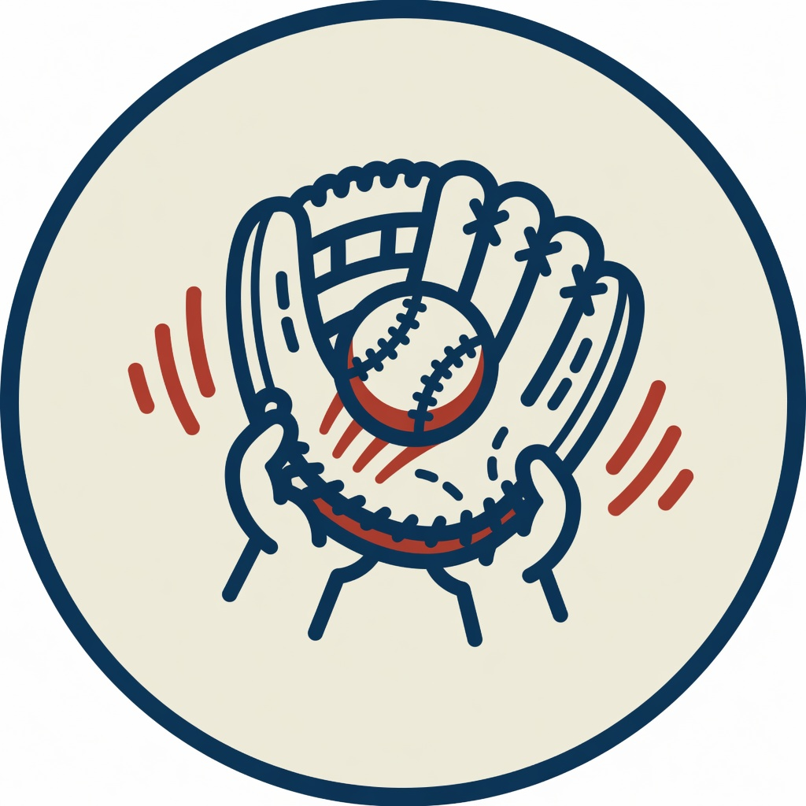
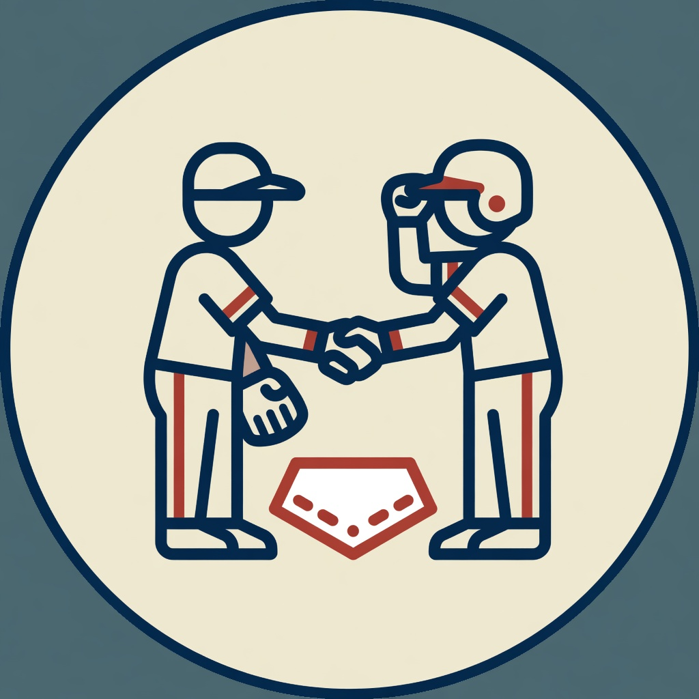
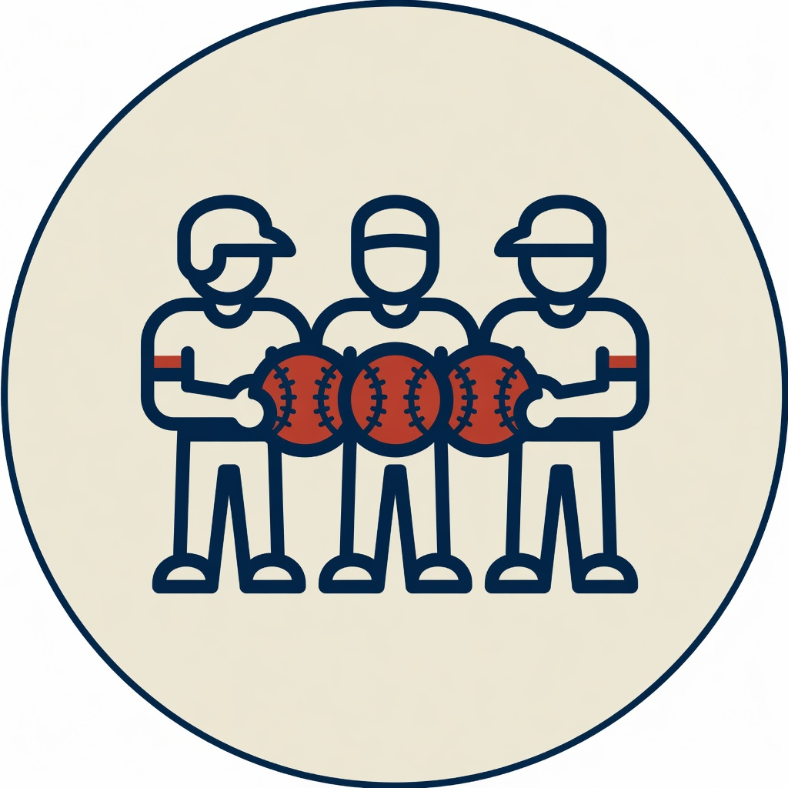
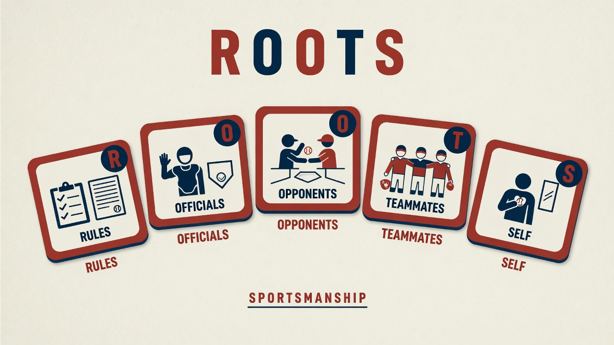

Learn baseball, one chapter at a time
Talent is what you have, effort is what you give.
My Path
Your recommended starting point and every chapter, grouped by tier.
Chapter
Read the lesson, try the diagrams, then take the chapter quiz.
Chapter quiz
Answer each question, then read the explanation.
Baseball IQ
A 20-question adaptive test scored on the 40–160 BBIQ scale.
Review
Missed questions return here on a spaced schedule until they stick.
Glossary
Every baseball term used in the chapters, A to Z.
Help & Guide
How this app works
Homerun Learn to Play is a baseball curriculum you can work through at your own pace. Everything runs in this browser — no account, no install beyond what you choose to pin to your home screen.
- Find your starting point. A short placement quiz (a few questions about you, then a handful of baseball questions) recommends a tier. You can skip it and start from the very beginning, and you can re-run it later.
- Read the chapters. Twenty-four chapters across six tiers, from Rookie to Pro Mind. Each chapter has short lessons, diagrams, and a few things to try with your hands or keyboard.
- Take the chapter quiz. Pass at 75%. You can retake as often as you like; your best score is kept. Every miss is saved for review.
- Use the review deck. Missed questions come back on a spaced schedule — sooner if you miss again, later as you get them right.
- Measure Baseball IQ. A separate 20-question adaptive test scores you on a 40–160 BBIQ scale and shows which topics are strong and which to study next.
Every chapter stays unlocked. Placement only highlights where to start; it never locks content away.
How your progress is stored
Your path, quiz scores, review deck, and Baseball IQ history live in this browser on this device. There is no account and no cloud copy. Closing the tab is fine — progress is saved as you go. Clearing this site’s data, switching browsers, or using another phone or computer starts you over unless you have a backup.
Export and import
Because progress lives only here, a backup is how you keep it or move it.
- Export downloads a
.jsonfile of your progress. Keep it somewhere safe, or copy it to another device. - Import reads a file you exported earlier and merges it with what is already here: higher quiz scores win, completed chapters stay completed, and review items keep the later due date.
Export before you clear browser data, switch devices, or update the app if you want a belt-and-suspenders copy.
Feedback, version, and history
Found a problem, a confusing quiz question, or an idea for a later chapter? Send a note — the app writes the email and opens it in your mail app.
The version you are running is also shown in the footer. A small update adds 0.1; a larger one adds 1.0. Open the version history for every release and what changed.
About Homerun Baseball Ottawa
Homerun Baseball Ottawa is a values-based youth baseball nonprofit in Ottawa, Canada. The app teaches the game the same way the club does: effort over talent, and the three values always in this order.
-

Effort -

Respect -

Team
Coaches follow the ROOTS code:
- Rules
- Officials
- Opponents
- Teammates
- Self
